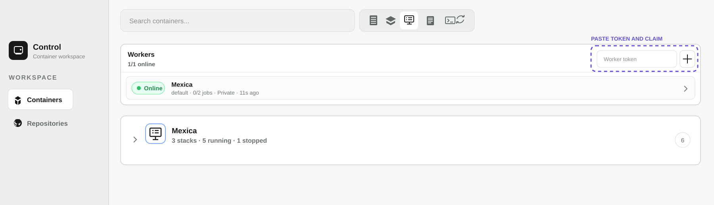

Internal Quick Guide
Launch and claim a remote worker from cjarn/docker-panel-lite-worker:py.
docker login -u cjarn
# When prompted, paste your PAT instead of your password
# PAT: dckr_pat_<your-personal-access-token>
mkdir -p "$HOME/docker-panel-worker/repos" \ "$HOME/docker-panel-worker/data"
data to preserve the worker name, ID and claim token.docker run -d --pull always \ --name docker-panel-lite-worker \ --restart unless-stopped \ -v /var/run/docker.sock:/var/run/docker.sock \ -v "$HOME/docker-panel-worker/repos:/app/clones" \ -v "$HOME/docker-panel-worker/data:/app/data" \ cjarn/docker-panel-lite-worker:py
docker logs --tail 100 docker-panel-lite-worker
# Look for: Worker claim token for worker-default-...: <generated-worker-token>

| docker logs -f docker-panel-lite-worker | Follow worker activity; Ctrl+C exits the log stream. |
| docker restart docker-panel-lite-worker | Restart while preserving identity. |
| docker rm -f docker-panel-lite-worker | Remove only the container; persistent folders remain. |
| rm -rf "$HOME/docker-panel-worker" | Permanent: deletes repositories, identity and token. |
Never share Docker Hub PATs, Worker Tokens, Firebase credentials or encryption keys in logs or documentation.